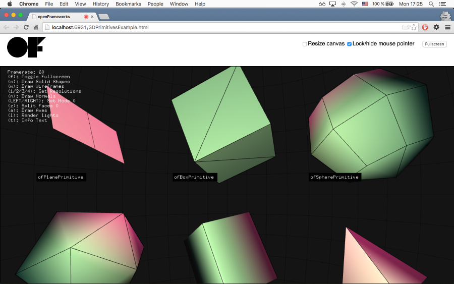

emscripten setup
Have you ever made a project in openFrameworks and been like "This is awesome! I want to put it on my online portfolio!". You could always make a video or take photos, but what about the UI aspect of your project? How can people see the awesome mouse effects you made? Enter Emscripten. Emscripten translates your C++ code into Javascript code in a matter of minutes! So you can put your awesome OF project "on the line" in your portfolio.
These instruction will show you how to compile one example project in the openFrameworks distribution, and can be reused whenever you want to translate an openFrameworks sketch to a web page. Assuming that you have downloaded openFrameworks 0.9 (it works only with OF versions >= 0.9) you only have to install emscripten and compile a project with it. Here the instruction steb by step.
Install Emscripten
Go at this page and download the SDK for your Operating System
If your are on windows, double click the .exe installer and follow the wizard.
If you are on Mac or Linux, search for the Portable Emscripten SDK for Linux and OS X, click on it and start the download. Once the download is finished, unzip the folder, open a terminal there and run the followings commands:
# Fetch the latest registry of available tools.
./emsdk update
# Download and install the latest SDK tools.
./emsdk install latest
# Make the "latest" SDK "active"
./emsdk activate latest
the installation will take a while. When it is finished, type source ./emsdk_env.sh to set the system path to the active version of Emscripten. You can copy the output of this command and add it to your .profile file, in order to save this variables also for the next sessions.
Compile an openFrameworks project using emscripten
Open the terminal in in one project in the examples folder, like examples/3d/3DPrimitivesExample, and compile the project using this command
emmake make
Once the compilation is finished, there will be a new file in examples/3d/3DPrimitivesExample/bin, the 3DPrimitivesExample.html file. Open this file with the command:
emrun bin/3DPrimitivesExample.html
If it does not work, it is probably because you are opening with safari, and safari does not support WebGL. Let's open it with another browser, like chrome
emrun --browser chrome bin/3DPrimitivesExample.html
If everything works, you should see this image

This Tutorial is taken from this blog post by Regine Flores Mir.